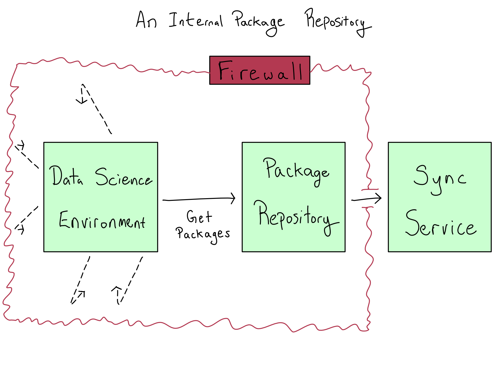

18 Package Management in the Enterprise
It’s impossible to imagine doing machine learning in Python without {scikit-learn} or creating graphics in R without {ggplot2}. You know that you can’t get work done without access to the open-source libraries and packages that extend base Python and R.
But in an enterprise, you probably won’t have free reign to install any package that’s available PyPI, Conda Forge, CRAN, BioConductor, GitHub whenever you want. Where a small or immature organization might have a laissez-faire attitude toward packages, an enterprise will not. Instead, most enterprises block software that hasn’t explicitly been allowed.
Moreover, your IT/Admins probably don’t have deep experience with open-source software, and they may not understand how badly you need access to packages. This chapter will help you understand IT/Admin concerns about packages and some solutions that might help you collaborate with them.
18.1 Ensuring packages are safe
IT/Admins’s biggest concern about packages is that they might be unsafe. For example, a package could introduce an exploitable bug in your code, be a trojan horse that exfiltrates data when activated, or include incorrect code that will yield numerically bad results.
Some of these concerns are lessened because most data science projects run entirely inside a private environment. For example, worries about exploitable Javascript code are significantly reduced when the only people with access to the application are already staff at your organization. Similarly, a package that maliciously grabs data from your system and exports it will be ineffective in an airgapped environment.
IT/Admins help create “validated” environments with trusted packages in some industries. Those validated environments may also be locked to particular projects. This is particularly common in highly regulated industries with longstanding statistical practices, like pharmaceuticals.
A basic, but effective, form of package security is to limit the allowable packages to popular packages, packages from known organizations and authors, or packages that outside groups have validated as safe. Some organizations pay for paid products or services to do this validation. Increasingly, industry groups are creating lists of packages that meet quality and security standards. For example, the R Validation Hub is a pharmaceutical industry group creating lists of R packages that meet quality standards.
Even IT/Admin organizations that don’t help validate packages for quality may want to check incoming packages for known security vulnerabilities.
Every day, software security vulnerabilities are identified and publicized. These vulnerabilities are maintained in the CVE (Common Vulnerabilities and Exposures) system. Each CVE is assigned an identifier and a severity score that ranges from None to Critical.
These CVEs can get into your organization when they are in code, which is a component of the software you’re using directly. For example, a CVE in Javascript might show up in the version of Javascript used by Jupyter Notebook, RStudio, Shiny, or Streamlit. Many companies disallow using software with Critical CVEs and only temporarily allow software with a few High CVEs.
Beyond checking for known vulnerabilities, some organizations try to ensure that packages aren’t introducing novel security issues via a code scanner. This software runs incoming code through an engine to detect potential security risks – like insecure encryption libraries or calls to external web services or databases.
Code scanners are almost always paid tools. I believe that the creators of these tools often overstate the potential benefits and that a lot of code scanning is security theater. This is particularly true because of the languages used by data scientists. Javascript is extremely popular, is the front-end of public websites, and has reasonably well-developed scanning software. But it’s rarely used in data science. Python is very popular but is rarely on the front end of websites and, therefore, has fewer scanners. R is far less prevalent than either Python or Javascript, is never in a website front end, and has no scanners I know of.
Unfortunately, your organization may require running Python and R packages through a code scanner, even if there’s little value from the activity.
18.2 Open-source licensing issues
In addition to security issues, some organizations are concerned about the legal implications of using free and open-source software (FOSS) in their environment. These organizations, most often those selling software, want to limit the use of specific FOSS licenses in their environment.
I am not a lawyer, and this should not be taken as legal advice; hopefully, this is helpful context on the legal issues with FOSS.
When someone releases software, they can choose a license, a legal document explaining what consumers can do with the software.
The type of license you’re probably most familiar with is a copyright. A copyright gives the owner exclusivity to distribute the software and charge for it. For example, if you buy a copy of Microsoft Word, you have a limited license to use the software, but you’re not allowed to inspect the source code of Microsoft Word or to share the software.
In 1985, the Free Software Foundation (FSF) was created to support the creation of free software. They wanted to facilitate using, reusing, and sharing software. In particular, the FSF supported four freedoms for software:1
- Run the program however you wish for any purpose.
- Study the source code of the program and change it as you wish.
- Redistribute the software as you wish to others.
- Distribute copies of the software once you’ve made changes so everyone can benefit.
Someone could try to grant these freedoms by simply not applying a copyright to their software. But then there would be no guarantee that they wouldn’t show up later, claiming they deserved a cut of software built on theirs. FOSS licensing made it clear what was permitted.
It’s expensive to create and maintain FOSS. For that reason, the free in FOSS is about freedom, not zero cost. As a common saying goes, it means free as in free speech, not free as in free beer.
Organizations have attempted to support FOSS with different business models to varying degrees of success. These models include pay-what-you-want models, donations or foundation support, paid features or products, advertising or integrations, and paid support, services, or hosting.
There isn’t just one FOSS license; instead, there are dozens. Permissive licenses allow you to do whatever you want with the FOSS software. For example, the permissive MIT license allows you to, “use, copy, modify, merge, publish, distribute, sublicense, and/or sell” MIT-licensed software without attribution. Most organizations have no concerns using software with a permissive open-source license.
The bigger concern is software with a copyleft or viral FOSS license. Copyleft software requires that any derivative works be released under a similar license. The idea is that open-source software should beget more open-source software and not be used by big companies to make megabucks.
The concern enterprises have with copyleft licenses is that they might legally propagate into private work inside the organization. For example, what if a court ruled that Apple or Google had to suddenly open-source all their software because of developers’ use of copyleft licenses?
Much of the concern centers around what it means for software to be a derivative work of another. Most people agree that artifacts created with copyleft-licensed software – like your plots, reports, and apps – are not themselves derivative works. But the treatment of software that incorporates copyleft-licensed software is murky. The reality is that since there have been no court cases on this topic, nobody knows how it would shake out if it does someday get to court, leading some organizations to err on the side of caution.
These concerns are less relevant for Python than for R. Python is released under a permissive Python Software Foundation (PSF) license and Jupyter Notebook under a permissive modified BSD. R is released under the copyleft GPL license and RStudio under a copyleft AGPL.
However, every single package author can choose a license for themselves. In an enterprise context, these discussions focus on knowing – and potentially blocking – the use of packages under copyleft licenses inside the enterprise.
18.3 Controlling package flows
Whether your organization is trying to limit CVE exposure, run a code scanner, limit copyleft exposure, or stick to a known list of good packages, it needs a way to restrict the packages available inside the environment.
If you’ve given someone access to Python or R, you can’t remove the ability to run pip install or install.packages. That’s one reason why many enterprise environments are airgapped – it’s the only way to ensure data scientists can’t install packages from outside.
Most IT/Admins understand that airgapping is the best way to stop unauthorized package installs. The next bit – that they do need to provide you a way to install packages – is the part that may require some convincing.
Many enterprises run package repository software inside their firewall to govern package ingestion and availability. Most package repository products are paid because enterprises primarily need them. Common ones include Jfrog Artifactory, Sonatype Nexus, Anaconda Business, and Posit Package Manager.
Artifactory and Nexus are generalized library and package management solutions for all sorts of software, while Anaconda and Posit Package Manager are more narrowly tailored for data science use cases. I’d suggest working with your IT/Admins to get data science focused repository software. Often these repositories can run alongside general-purpose repository software if you already have it.
Depending on your repository software, it may connect to an outside sync service or support manual file transfers for package updates. In many airgapped environments, IT/Admins are comfortable having narrow exceptions so the package repository can download packages.

This tends to work best when the IT/Admin is the one who controls which packages are allowed into the repository and when. Then you, as the data scientist, have the freedom to install those packages into any individual project and manage them there using environment as code tooling, as discussed in Chapter 1.
18.4 Comprehension Questions
- What are the concerns IT/Admins have about packages in an enterprise context?
- What are three tools IT/Admins might use to ensure packages are safe?
- What is the difference between permissive and copyleft open-source licenses? Why are some organizations concerned about using code that includes copyleft licenses?
They’re numbered 1-4 here, but like many numbered computer science lists, the official numbering actually begins with 0.↩︎